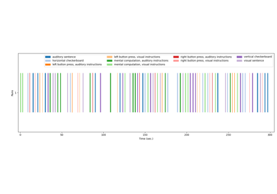
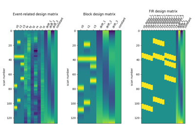
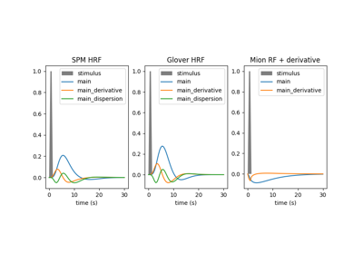
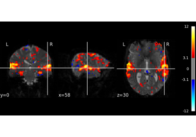
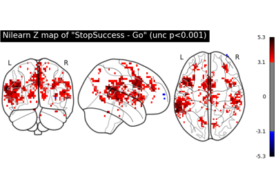
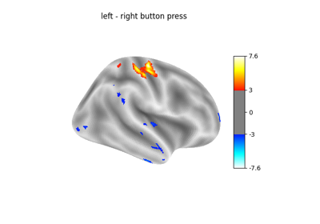
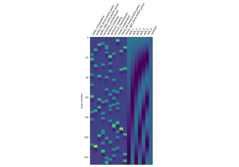

9.8.4. GLM: First level analysis examples¶
These are examples focused on showcasing first level models functionality and single subject analysis.
See Analyzing fMRI using GLMs for more details.

Generate an events.tsv file for the NeuroSpin localizer task
Generate an events.tsv file for the NeuroSpin localizer task

Example of explicit fixed effects fMRI model fitting
Example of explicit fixed effects fMRI model fitting


Examples of design matrices

Analysis of an fMRI dataset with a Finite Impule Response (FIR) model
Analysis of an fMRI dataset with a Finite Impule Response (FIR) model

Single-subject data (two sessions) in native space
Single-subject data (two sessions) in native space

Example of MRI response functions
Example of MRI response functions


Predicted time series and residuals
Predicted time series and residuals

First level analysis of a complete BIDS dataset from openneuro
First level analysis of a complete BIDS dataset from openneuro

Example of surface-based first-level analysis
Example of surface-based first-level analysis

Understanding parameters of the first-level model
Understanding parameters of the first-level model